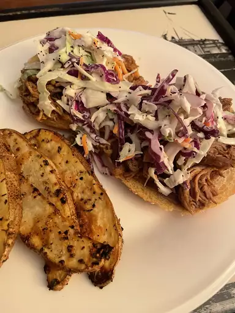

Slow Cooker Texas Pulled Pork

Description
This pulled pork recipe is tender, juicy, and oh-so flavorful — and it’s incredibly easy to make in your slow cooker!
Making barbecue-restaurant-worthy pulled pork is easier to make than you think. You'll find a detailed ingredient list and step-by-step instructions in the recipe below, but let's go over the basics:
Ingredients
- Oil
- Pork
- Sauces
- Apple Cider Vinegar
- Broth
- Brown Sugar
- Seasonings
- Onion
- Buns and Butter
Steps
- Pour oil into the slow cooker, then place the roast on top of the oil.
- Add the remaining ingredients to the Crock-Pot.
- Cover and cook until the pork shreds easily.
- Shred the pork and return it to the slow cooker to combine it with the juices.
- If you’re making sandwiches, serve the pulled pork on buttered buns.